THE AVERAGE PERSON
147×
DAILY UNLOCKS

Most of it
isn't even
your choice.
THE PROBLEM
Your brain
is on autopilot.
UNMINDY
CATCHES YOU IN 3 SECONDS
Catch.
Ask.
Lock.
UNMINDY
Break the scroll.
landing-nine-pi-85.vercel.app